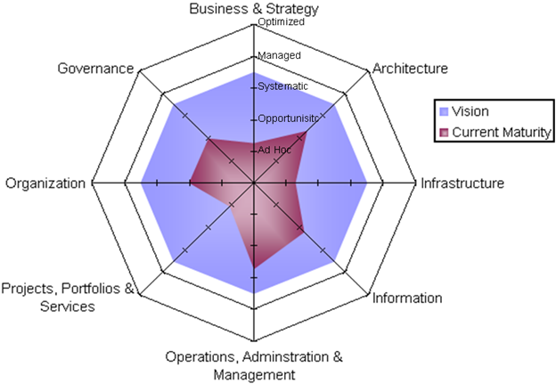
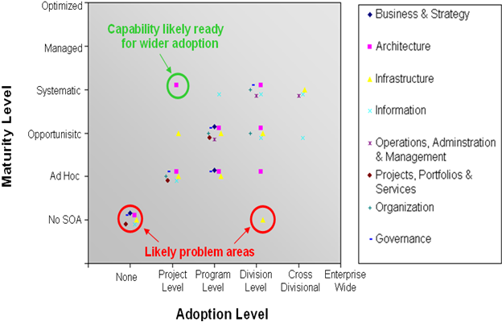

OUM |
Task Overview |
||
Method Navigation |
Current Page Navigation |
||
|
|
||||||||
The purpose of this task is to identify constraints in the current situation for a given capability in order to meet the defined future state objectives and requirements.
The results of this task also provide a list of current pains that need to be addressed in the design of a desired future state.
Review the current situation, and identify the current deficiencies or working constraints related to that situation. In most situations, this view is on the enterprise level, but the scope engagement might also be limited to a part of the enterprise. Ensure that your effort is in line with the given scope. Also, the scope may be enterprise wide, but limited to a specific aspect of the business, or a specific aspect of the architecture. For example, it may be limited to a few business processes, or it may be limited to map the architectural aspects related to data structures, or only to cover security aspects of the architecture.
INIT.ACT.DSPC Develop Solution and Present to Customer
Current Capability Challenges
This work product contains a list of problem areas with which the enterprise is faced including the impact of each challenge on the organization or the infrastructure/application(s)/services used in the enterprise.
You should follow these steps:
No. |
Task Step | Component | Component Description |
|---|---|---|---|
1 |
Identify problem domains. | Problem Domains | This component includes the areas (domains) with the largest capability challenges, and therefore, the domains that will be investigated further. |
2 |
Identify outlier capabilities | Outlier Capabilities | This component describes the capabilities where there is a significant gap between how different parts of the enterprise (projects, programs, division, cross division, enterprise) perform against the capabilities. |
3 |
Identify lagging capabilities | Lagging Capabilities | The Lagging Capabilities component identifies any outlier capabilities well below the other parts of the organization. These are capabilities that are done poorly and are candidates for corrective action. |
4 |
Prepare for meeting or workshop. | None | |
5 |
Walk through current architectural situation and identify challenge areas. | None | |
6 |
Conclude meeting or workshop and isolate challenges. | Architectural Challenges | The Architectural Challenges component is a list of architectural problem areas for the organization. In this step, the initial list from step 2 is expanded to include the impact of each challenge on personnel or application(s). |
The first step you do is to identify the domains that exhibit the largest challenges related to the capability you are investigating. Depending on the kind of capability you are investigating, you may have executed a maturity assessment (ER.015). Comparing this with the customer’s future vision (ER.160) allows you to find the domains where there are gaps between the current situation and the customer’s future vision. All domains where there is a larger gap between the current state and the future vision can be defined as the problem domains.
The picture below visualizes an example of the gap between the current maturity on a number of domains. We can clearly see that there is a gap for all the domains, but that there are two problem domains in particular, namely the Projects, Portfolios and Services and the Infrastructure domain.

If you have not performed a current situation analysis or defined a future vision, it is recommended that you do this prior to starting this task, unless you have similar kind of information available. You will at least need some understanding of the current problems that the customer wants to challenge and what kind of objectives or goals they have for the area.
Investigating further the relevant domains, you should attempt to identify the outlier capabilities. These are the capabilities where there are large deviations on maturity within the organization. Review each capability and investigate how mature parts of the organization are for that capability. For most capabilities, the organization has the same maturity across projects, programs, divisions and so on.
There is a deviations in capability if there is one area of the organization that either has a significant higher or lower maturity than the other parts of the organization. The picture below visualizes the result of such an analysis:

When you look at the Project Level, we can see that most of the investigated projects are at the ad-hoc level for all the capacities under investigation. However, there is one project that shows a significant higher maturity for the Architecture capability. At the Division Level, we see that most divisions have either a systematic or opportunistic maturity level for the departments that have been investigated. But again, there is one capability, Infrastructure, which has a significant lower maturity than in the other levels.
When you do an analysis on the outlier capabilities, the identified capabilities should be investigated further. A capability that for one part of the organization is well above the others indicates a capability that is done very well within a relatively small area of the organization. In the example above, there is a capability at the Systematic Level of maturity done within a single project. Fostering greater adoption of this capability may provide an easy win, as there is no need to develop greater competency for this capability within the organization since it already exists within the organization. Some training or mentoring can spread the ability more broadly within the organization.
An outlier capability well below the other parts of the organization indicates a capability that is done poorly. In the example above, there is a capability being done at a No SOA Maturity Level across the entire division. Corrective action needs to be taken for this capability since if left uncorrected, it will inhibit (and probably already has inhibited) the initiative at hand. These types of capabilities are investigated further in the next step.
The capabilities that are done poorly within the whole or parts of the organization are candidates for further investigation. In the example above, these are the capabilities that plot nearer the lower left corner in the scatter. However, it is important to point out that not all capabilities are of equal importance for a particular organization. In fact, there may be capabilities that are deemed unimportant or even not applicable for a particular organization. Thus, it is necessary to review each capability with a low score and determine whether it is a top priority, a low priority, or unimportant from the perspective of the future vision. If a capability is deemed unimportant for a particular organization, it should not be considered a lagging capability. If you think a lagging capability is unimportant, you should always confirm that with the organization during the meeting or workshop.
Set up a meeting or workshop with the relevant participants from the organization to go through your findings. Prepare questions to verify your findings, and to go further into detail in areas where more information is required or information is completely missing. The purpose of the meeting/workshop is to verify whether the organization recognizes themselves in the findings, to identify primary pains that may be the reasons for the problems, and to determine if the situations can be improved with changes.
During the meeting or workshop, walk through your findings and ask for feedback. Go through the additional questions you have prepared to complete the picture and to identify/verify possible pains. Keep in mind, that you still are only gathering information at this stage. Do not be tempted to suggest solutions at this point in time, as you might not yet have a good enough picture to make the best recommendations.
Walk through the results of the meeting and highlight the agreed on relevant challenges for the organization.
This task has supplemental guidance that should be considered if you are performing an engagement using the Business Process Management (BPM) Roadmap service offering. Use the following to access the task-specific supplemental guidance. To access all BPM Roadmap supplemental information, use the BPM Roadmap Supplemental Guide.
This task has supplemental guidance that should be considered if you are performing an engagement using the Service-Oriented Architecture (SOA) Roadmap. Use the following to access the task-specific supplemental guidance. To access all SOA Roadmap supplemental information, use the SOA Roadmap Supplemental Guide.
This task involves the following method roles:
Role |
Responsibility |
% |
|---|---|---|
Enterprise Architect |
Conduct capability challenges workshops with customer stakeholders | 100 |
Customer Enterprise Architect |
Participate in workshop. Provide assistance, as appropriate. | * |
Customer Stakeholders |
Participate in workshop. | * |
* Participation level not estimated.
You need the following for this task:
Prerequisite |
Usage |
|---|---|
Maturity Analysis and Recommendations Report (ER.015) |
Use the Maturity Analysis and Recommendations Report to determine the problem domains. |
Desired Future State (ER.160) |
If available, use this as an input together with an analysis of the current situation to identify the problem domains. |
IT Project Portfolio (IP.010) Current Architecture (EA.030) |
Review these work products to understand the current situation in which you will identify architectural challenges. |
Enterprise Process Model (BA.040) Enterprise Domain Model (BA.050) |
Use these models to identify possible challenges related to the business. |
Supplemental Enterprise Requirements (ER.100) |
Review these requirements to help identify possible challenges. |
There are currently no templates available to assist with this task.
The Current Capability Challenges is used in the following ways:
Distribute the Current Capability Challenges as follows:
Use the following criteria to check the quality of this work product:

Copyright © 2006, 2016, Oracle and/or its affiliates. All rights reserved.